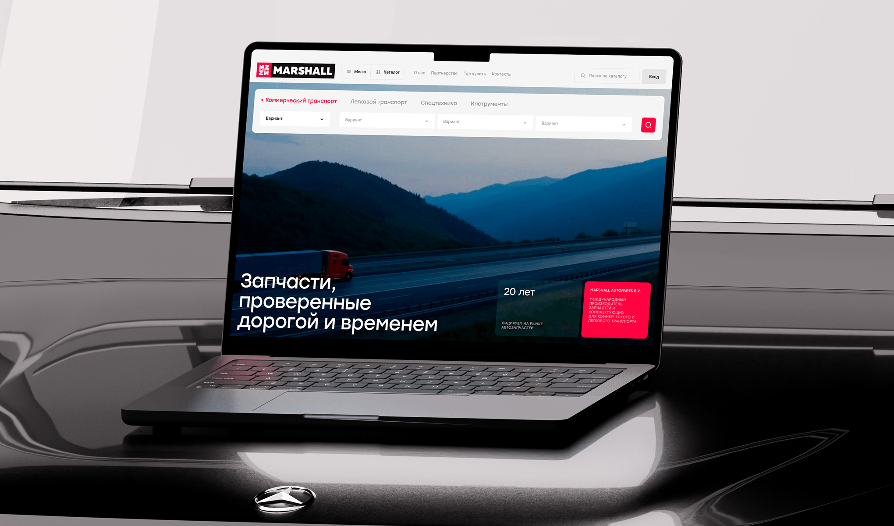

Проблема
3 разных сайта → путаница и сложный путь покупки
Решение
Новая архитектура сайта, единая платформа, новый флоу покупки
Результат
3 сайта → 1 сервис;
Добавление в корзину: 15 секунд → 8 секунд;
Шаги до покупки: 5 шагов → 3 шага
О проекте
MARSHALL Autoparts — производитель и дистрибьютор автозапчастей. Компания объединяет несколько направлений бизнеса, поэтому у них было три отдельных сайта: корпоративный, интернет-магазин бренда и магазин дистрибьютора.

Проблемы
- Несколько сайтов → сложный путь покупки
- Долгий флоу покупки → брошенные корзины
- Нет явного основного сценария → пользователь не понимает, с чего начать
- Менеджерам сложно работать с несколькими площадками
- Лишние шаги в сценарии → растёт время и отток
- Перегруженный интерфейс → сложно считать ценность
- Несовпадение ожиданий и реальности → падает доверие

Цели проекта
- Объединить три сайта в один продукт на основе платформы MARSHALL
- Пересобрать флоу ключевых сценариев (личный кабинет, оформление заказа)
- Уменьшить количество шагов до покупки
- Повысить узнаваемость бренда с помощью корпоративных страниц сайта
- Сделать сайт удобным как для конечных покупателей, так и для бизнеса
Мои задачи
Я присоединился к проекту в самом начале и в связке с арт-директором довел его до финала. За 9 месяцев нам удалось разработать консистентный e-commerce сервис, который объединил в себе все направления деятельности компании. Вот, что я конкретно делал:
- исследование рынка и пользователей
- генерация гипотез
- разработка кликабельного прототипа на 70 экранов
- детальная проработка ключевых пользовательских сценариев
- дизайн-концепция продукта
- развитие концепции и полный дизайн сервиса

Инсайты после исследований
Я проанализировал существующие продукты MARSHALL, а также пользователей и готовые решения на рынке, что помогло мне получить инсайты, на основе которых я принял несколько решений:
Инсайт
Решение
Карточка товара похожа на раздел корзины. Часть пользователей отваливается на этом шаге
Полная пересборка карточки товара. Сделать ее похожей на привычную карточку из e-commerce продуктов
Многие клиенты уже «на автомате» заказывают детали и знают путь покупки наизусть
Дать возможность настройки деталей доставки прямо в карточке, чтобы сократить время на оформление заказа
Пользователь ожидает привычный и простой интерфейс, а получает сложную иерархию и непонятное взаимодействие
Внедрить визуальную иерархию, при которой пользователь сразу найдет нужные элементы. Создать дизайн-систему и UI-кит
Ключевые решения
Новая UX-архитектура и логика
Я разработал новый mind map продукта, который позволила объединить корпоративный сайт, магазин и личный кабинет в единую систему.
Теперь пользователи могут узнать всю нужную информацию на одном сайте, вместо того, чтобы метаться по нескольким сервисам. А менеджерам и продактам MARSHALL больше не придется обрабатывать заявки с разных сайтов

Оптимизация продукта: 3 сайта → 1 сервис
Новая карточка товара
При открытии карточки товара, пользователям потребовалось время, чтобы сориентироваться куда они попали. До целевого действия (Добавление в корзину) требовалось от 15 до 20 секунд.
Я предложил более понятную структуру:
- изображение товара
- ключевые характеристики
- цена и покупка
- способы доставки.
В обновленном варианте карточка имеет более понятный и привычный для пользователя вид, поэтому нам удалось скоратить время ЦД до 8 секунд.

Добавление в корзину: 15 секунд → 8 секунд
Ускорение покупки
Одной из задач продукта было сократить флоу от карточки до оформленного заказа.
Чтобы сделать это, я добавил:
- выбор способа доставки прямо в карточке товара
- гибкую настройку доставки для каждого товара
- трехэтапный процесс оформления заказа.
- прозрачную информацию о наличии.

Флоу до покупки: 5 действий → 3 действия
Дизайн-система и UI-кит
Мы с полного нуля создали дизайн-систему, которую можно масштабировать и на последующие продукты компании. Также мы создали UI-кит на 220 элементов, включающий в себя:
- компоненты интерфейса
- состояния элементов
- интеракции и анимации.

С 0 создали масштабируемую дизайн-систему и UI-кит
Дизайн
Мы разработали три концепции интерфейса.
Клиент выбрал концепт в bento-стиле, который легко масштабируется на разные разделы сайта. Тем не менее, мы использовали и «смелые» решения с необычной версткой и повествованием.


Результат
Объединил 3 сайта в 1 сервис, тем самым:
- Оптимизировал процессы внутри компании, снял часть нагрузки с менеджеров и продактов
- Сформировал понятный основной сценарий взаимодействия
- Выстроил понятную логику продукта
3 сайта → 1 сервис;
Добавление в корзину: 15 секунд → 8 секунд;
Шаги до покупки: 5 шагов → 3 шага

Рефлексия
Самой сложной частью проекта стал этап защиты дизайн-решений. Заказчик тяжело воспринимал изменения и противился новой механике. Тем не менее, благодаря настойчивости и аргументации, мы доказали правильность наших решений.
К тому же ниша автозапчастей довольно сложная: много важных деталей, сложные паттерны покупки и консервативная аудитория. По началу было тяжело с этим разбираться.
Проект научил меня защите проекта и аргументации. Еще я понял, что даже самое крутое решение может не работать для определенной аудитории.
У этого кейса есть более подробный вариант в BuildIn (формат Notion, работает без VPN). Если вы хотите подробнее почитать про процессы и исследования, то вам туда!